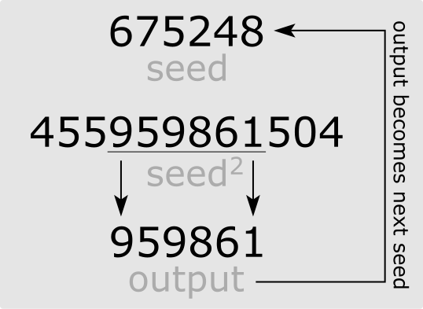

| Choisissez votre langue ! | Choose your language ! |
Une des premières méthodes de génération de nombres pseudo-aléatoires par algorithme est celle du 'middle-square' de Von-Neumann en 1949.
Selon les critères actuels cette méthode n'est guère acceptable, mais elle avait le mérite de remplacer un processus physique (l'introduction de paquets de cartes perforées 'aléatoires').
La méthode consiste à prendre un nombre de n chiffres (n entier pair) et à l'élever au carré, le carré en question comporte 2n chiffres, on conserve la tranche du milieu en oubliant les n/2 premiers chiffres et les n/2 derniers.
La méthode suppose toujours que l'on complète avec des zéros devant.
Voici un schéma Wikipédia pour expliquer le processus récurrent:

Ecrire un programme Python et /ou Julia qui génère la suite du middle-square dans le cas n=4 (4 chiffres).
Le principal problème est que le processus 'bloque' rapidement dès qu'une petite valeur est trouvée.
En général la longueur de la suite générée n'est pas grande.
Par exemple pour n= 150 on va trouver les 58 nombres :
[150, 225, 506, 2560, 5536, 6472, 8867, 6236, 8876, 7833, 3558, 6593, 4676, 8649, 8052, 8347, 6724, 2121, 4986, 8601, 9772, 4919, 1965, 8612, 1665, 7722, 6292, 5892, 7156, 2083, 3388, 4785, 8962, 3174, 742, 5505, 3050, 3025, 1506, 2680, 1824, 3269, 6863, 1007, 140, 196, 384, 1474, 1726, 9790, 8441, 2504, 2700, 2900, 4100, 8100, 6100, 2100]
après 2100²=4410000 donc le nombre suivant est 4100 déjà dans la liste, on a une périodicité.
Compléter le programme pour trouver le nombre entre 1 et 9999 qui génère la plus longue suite d'entiers et trouver cette longueur.
aide
Commencer par écrire une fonction std(n,p) qui transforme un entier n en une chaîne standardisée de caractères de longueur p en complétant si nécessaire avec des zéros devant
exemple std(714514,8)="00714514"
solution
Donc avec Python :
Soit avec Julia :
One of the first methods of generating pseudo-random numbers by algorithm is that of Von-Neumann's 'middle-square' in 1949.
By current standards this method is hardly acceptable, but it had the merit of replacing a physical process (the introduction of 'random' punched card packs).
The method consists of taking a number of n digits (n even integer) and squaring it, the square in question has 2n digits, we keep the middle slice while forgetting the first n/2 digits and the latest n/2 as well.
The method always assumes that we complete with leading zeros.
Here is a Wikipedia diagram to explain the recurring process:
Write a Python and/or Julia program that generates the sequence of the middle-square in the case n=4 (4 digits).
The main problem is that the process 'hangs' quickly as soon as a small value is found.
In general the length of the generated sequence is not long.
For example for n= 150 we will find the 58 numbers:
[150, 225, 506, 2560, 5536, 6472, 8867, 6236, 8876, 7833, 3558, 6593, 4676, 8649, 8052, 8347, 6724, 2121, 4986, 8601, 9772 , 4919, 1965, 8612, 1665 , 7722, 6292, 5892, 7156, 2083, 3388, 4785, 8962, 3174, 742, 5505, 3050, 3025, 1506, 2680, 1824, 3269, 6863, 1007, 140, 1 96, 384, 1474, 1726, 9790 , 8441, 2504, 2700, 2900, 4100, 8100, 6100, 2100]
after 2100²=4410000 so the next number is 4100 already in the list, we have a periodicity.
Complete the program to find the number between 1 and 9999 that generates the longest sequence of integers and find that length.
hint
Start by writing a function std(n,p) which transforms an integer n into a standardized string of length p, completing if necessary with zeros in front
example std(714514,8)="00714514"
solution
So with Python :
Or with Julia :
|
Création Gilles Dubois - licence CC-BY-SA
Created by Gilles Dubois - licence CC-BY-SA
|
Septembre 2023
September 2023
|
Version mobile Jquery
Mobile Jquery version
|
|